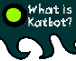

|  |
| Katbot.com
is created and produced by Soho design firm Funny Garbage and is the brainchild
of FG's resident designer Angela martini. Angela Martini knows all about that strange long island jutting out from the East coast of the mainland -- she spent twelve of her most formative years there. Long Island is not an easy place to go to high school, especially if you don't fit in. Not only was high school tough for Angela, but also for her latest creation, Katbot, who represents an amalgam of Angela's experiences and attitudes. After surviving high school, Angela ran off to New York City where she earned a B.F.A. in Illustration at F.I.T., then landed a job working as an illustrator in the fashion industry. Two years later, she got a job in new media. Then she got another job in new media. Then another. And another. Finally she found a home at Funny Garbage, where she has had the unique opportunity to develop Katbot. Aside from her duties at Funny Garbage, Angela runs two web sites: spacegirl.org -- her personal web universe, and CHERRYsucker.com -- an online literary web magazine. She also does freelance illustration for such diverse clients as HBO, Seventeen, The Wall Street Journal, Scholastic, and Ms. Angela lives in Brooklyn with her boyfriend and their two cats, neither of whom are chartreuse. Funny Garbage designs quirky websites, CD-ROMs, and interactive kiosks for clients and for fun too. We've created experiences for companies like the Cartoon Network, VH1, Luaka Bop, ID Magazine, and the Cooper-Hewitt Design Museum. Also, If you make it to Seattle, check out our kiosks at the Experience Music Project. The name Funny Garbage was coined way back when co-founder Peter Girardi was tagging subway cars in New York City. Later, in 1996, Peter teamed up with co-founder John Carlin, who had been raising money to fight AIDS. For the last 10 years, John's non-profit, the Red Hot Organization, has raised nearly $10 million by creating benefit albums and TV specials which feature artists like Cibo Matto, Nirvana, Patti Smith, Wilco, U2, Wu-Tang Clan, David Byrne, the Beastie Boys, Jonathan Demme, and Hal Hartley. And, Peter just became the youngest person to win the DaimlerChrysler Award for Design Excellence. Anyway, Funny Garbage is trying to make the web worth watching by creating new experiences for people who are bored with the same old stuff. If you want to find out more, look at funnygarbage.com. FUNNYGARBAGE is all that stuff you had when you were a kid that your mom and dad tried to throw away. All of their junk is our treasure. FUNNYGARBAGE is all of the unwanted stuff in the universe. |